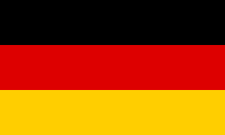

برشلونة
برشلونة تم إنشاء كأس السوبر الأوروبي في عام 1971 من قبل أنطون ويتكامب، وهو مراسل ومحرر رياضي في وقت لاحق من صحيفة التلغراف الهولندية. جاءت الفكرة إليه في وقت كانت فيه الكرة الشاملة الهولندية هي الأفضل في أوروبا وكانت أندية كرة القدم الهولندية تتمتع بعصرها الذهبي (خاصةً اياكس ). كان ويتكامب يبحث عن شيء جديد ليحدد بشكل قاطع من هو أفضل فريق في أوروبا وأيضًا لاختبار فريق أياكس الأسطوري بقيادة يوهان كرويف. ثم اقترح أن يواجه الفائز بكأس أوروبا الفائز بكأس الكؤوس الأوروبية.
كل شيء كان من المقرر أن يولد منافسة جديدة. ومع ذلك، عندما حاول ويتكامب الحصول على تأييد رسمي لبطولته، رفض رئيس الاتحاد الأوروبي لكرة القدم ذلك.
يعتبر نهائي عام 1972 بين أياكس ورينجرز الإسكتلندي غير رسمية من قبل الاتحاد الأوروبي لكرة القدم، حيث تم حظر رينجرز من المنافسة الأوروبية بسبب سلوك مشجعيه خلال نهائي كأس الكؤوس الأوروبية 1972. نتيجة لذلك، رفض الاتحاد الأوروبي لكرة القدم تأييد المسابقة حتى الموسم التالي. تم لعبها على مباراتين وبدعم مالي من صحيفة التلغراف. فاز أياكس على رينجرز 6–3 في مجموع المباراتين وفاز بكأس السوبر الأوروبية (وإن كانت غير رسمية). كان نهائي عام 1973، الذي فاز فيه أياكس على ميلان 6–1 في مجموع المباراتين، أول كأس سوبر معترف بها رسميًا وبدعم من الويفا.
يحتفظ اليويفا بكأس بطولة كأس السوبر الأوروبي للأبد. يتم منح نسخة طبق الأصل بالحجم الكامل للنادي الفائز. يتم تقديم أربعين ميدالية ذهبية للنادي الفائز وأربعين ميدالية فضية للوصيف.
شهد كأس البطولة العديد من التغييرات في تاريخها. كان الكأس الأولى التي تم تقديمها إلى أياكس في عامي 1973 و1974 كبيرة للغاية؛ في الواقع، كان أكبر من كأس أوروبا. تم استبداله بلوحة بشعار الويفا الذهبي. كان الكأس التالي أصغر وأخف وزن في جميع بطولات الأندية الأوروبية، بوزن 5 كـغ (11 رطل) ويبلغ ارتفاعه 42.5 سـم (16.7 بوصة) في الطول (كأس دوري أبطال أوروبا يزن 8 كـغ (18 رطل) وكأس الدوري الأوروبي 15 كـغ (33 رطل)). يبلغ وزن النموذج الجديد، الذي تم طرحه في عام 2006، 12.2 كـغ (27 رطل) ويبلغ ارتفاعه 58 سـم (23 بوصة).
حتى عام 2008، سيتلقى الفريق الذي يفوز باللقب ثلاث مرات متتالية أو خمسة في المجموع نسخة أصلية من الكأس علامة تقدير خاصة. حقق ميلان وبرشلونة هذا الإنجاز، وفازا بما مجموعه خمس مرات لكل منهما. منذ ذلك الحين، تم الاحتفاظ بالكأس الأصلية بشكل حصري من قبل الويفا، هيئة إدارة كرة القدم الأوروبية.
حاليا، قواعد كأس السوبر الأوروبي هي أنها مباراة واحدة، يتم التنافس عليها في مكان محايد. تتكون المباراة من شوطين مدة كل منهما 45 دقيقة. إذا كانت النتيجة متعادلة في نهاية الـ90 دقيقة، يتم لعب شوطين إضافيين مدة كل منهما 15 دقيقة. إذا لم يكن هناك فائز في نهاية الشوط الثاني من الوقت الإضافي، فإن ركلات الترجيح هي التي ستحدد الفائز. يختار كل فريق 23 لاعبًا، يشارك كأساسي 11 منهم في المباراة. من بين اللاعبين الـ12 المتبقين، يمكن استبدال 3 لاعبين طوال المباراة؛ يُسمح بالبديل الرابع في حالة دخول المباراة للأشواط الإضافية. قد يرتدي كل فريق طقم الاختيار الأول الخاص به؛ وإذا كان يتعارض بسبب تشابهه الأطقم، يجب أن يرتدي الفريق الفائز بالدوري الأوروبي للعام الماضي القميص البديل. إذا رفض النادي اللعب أو كان غير مؤهل للعب، فسيتم استبداله بالوصيف في المسابقة التي تأهل من خلالها. إذا كان الملعب غير صالح للعب بسبب سوء الاحوال الجوية، يجب أن تلعب المباراة في اليوم التالي.

إسبانيا (بالإسبانية: España)، رسمياً مملكة إسبانيا (بالإسبانية: Reino de España) هي دولة عضو في الاتحاد الأوروبي تقع في جنوب غرب أوروبا في شبه الجزيرة الأيبيرية. يحد برها الرئيسي من الجنوب والشرق البحر الأبيض المتوسط باستثناء الحدود البرية الصغيرة مع إقليم ما وراء البحار البريطاني جبل طارق. يحدها من الشمال فرنسا وأندورا وخليج بسكاي، وإلى الشمال الغربي والغرب المحيط الأطلسي والبرتغال.
هولندا (بالهولندية: Nederland Ltspkr.png ˈne:dərˌlɑnt نيدرلاند) هي دولة تأسيسية تشكل الجزء الأوروبي من مملكة الأراضي المنخفضة (بالهولندية: Koninkrijk der Nederlanden) التي تتكون رسمياً من جزء أوروبي يضم اثنتي عشر مقاطعة، وتقع شمال غرب أوروبا، وجزء كاريبي يتكون من ثلاث جزر في البحر الكاريبي بأميركا اللاتينية. ويحد الجزء الأوروبي بحر الشمال من ناحيتي الشمال والغرب، وبلجيكا من الجنوب، وألمانيا من الشرق، ويشترك في حدوده البحرية مع كل من بلجيكا وألمانيا والمملكة المتحدة. نظام الحكم في هولندا ديمقراطي برلماني، وعاصمتها الرسمية هي أمستردام، في حين يقع مقر الملك والحكومة في لاهاي. ميناء روتردام هو أكبر ميناء في أوروبا – ويصل حجمه حجم الثلاث موانئ التي تليه مجتمعة – وكان أكبر ميناء في العالم في الفترة بين 1962 و2004. وكثيراً ما يستخدم اسم هولاندا ليشير لكل مملكة الأراضي المنخفضة.

تضم الأراضي الإسبانية أيضاً جزر البليار في البحر الأبيض المتوسط وجزر الكناري في المحيط الأطلسي قبالة الساحل الأفريقي واثنتين من مدن الحكم الذاتي في شمال أفريقيا هما سبتة ومليلية. علاوة على ذلك، تقع بلدية ييفيا الإسبانية كمكتنف داخل الأراضي الفرنسية. تبلغ مساحتها 504.030 كم² وبذلك تكون ثاني أكبر بلد من حيث المساحة في أوروبا الغربية والاتحاد الأوروبي بعد فرنسا.
بلجيكا أو مملكة بلجيكا هي دولة ذات نظام «ملكي اتحادي» في أوروبا الغربية. وهي عضو مؤسس في الاتحاد الأوروبي، وتستضيف مقر الاتحاد الأوروبي، فضلا عن ذلك العديد من المنظمات الدولية الرئيسية الأخرى مثل منظمة حلف شمال الأطلسي. بلجيكا تغطي مساحة 30،528 كيلومتر مربع ( 11،787 ميل مربع)، وعدد سكانها حوالي 11 مليون نسمة حسب حسابات عام 2018، عاصمتها هي مدينة بروكسل وهي العاصمة الإدارة لمنظمة الاتحاد الأوروبي.
اِسْكُتْلَنْدَا (بالانجليزية: Scotland) دولة في شمال غرب أوروبا، تعتبر جزء من الدول الأربع المكونة المملكة المتحدة. تحتل الثلث الشمالي من جزيرة بريطانيا العظمى وتحدها جنوباً إنجلترا ويحدها شرقاً بحر الشمال وغرباً المحيط الأطلسي. عاصمتها أدنبرة، وأهم مدنها وأكبرها مدينة غلاسكو. كانت اسكتلندا مملكة مستقلة حتى 1 مايو 1707 حين تم إقرار قانون الوحدة لعام 1707 والذي اتحدت بموجبه مملكتي إنجلترا واسكتلندا في ما يعرف اليوم بمملكة بريطانيا العظمى.
على جانبي الحدود الثقافية بين أوروبا الجرمانية واللاتينية، وفي بلجيكا لغتين رئيسيتين هما: الهولندية المتكلمين بها (حوالي 59٪)، ومعظمهم الفلمنكية، والمتكلمين بالفرنسية (حوالي 41٪)، ومعظمهم الولونيين، بالإضافة إلى مجموعة صغيرة من المتحدثين بالألمانية. اثنين من أكبر المناطق في بلجيكا هي المنطقة الناطقة باللغة الهولندية الفلاندر في الشمال والمنطقة الناطقة بالفرنسية جنوب والونيا. في إقليم العاصمة بروكسل، ثنائية اللغة رسمياً، هو جيب الناطقة بالفرنسية في الغالب داخل الإقليم الفلمنكي. تتواجد الجماعة الناطقة باللغة الألمانية في شرق والونيا. تنعكس تنوع بلجيكا اللغوي والصراعات السياسية ذات الصلة في التاريخ السياسي ونظام معقد من الحكومة.

رُومَانِيَا (بِالرُّومانِيَّة: عن هذا الملف România) رسمِياً جُمهُورِيَّة رُومَانِيا هِي دولة أُورُوبِّيَّة فِي شِبه جزِيرَة البلقان جنُوب شرق أورُوبا شمال نهرِ الدَّانُوب عاصِمتُها مدِينة بُوخارِست. وتقع دلتا الدانوب على أراضيها حيث يمر نهر الدانُوب في جنوب البلاد ويصب في البحر الأسود. وتقع جِبال الكاربات في الجنوب وفي وسط البلاد يحدها من الشمال أُوكرانيَا، من الشمال الشرقي مُولدُوفَا، من الشرق البحر الأَسود، من الجنوب بُلغاريَا ومن الغرب صِربِيَا والمجر. تأسست دولة رُومانِيا الحديثة بعد اتحاد الدولة الرُّومانِيَّة ومُولدُوفيا بقيادة أليكساندرُوا آيوآن كُوزا، وفي عام 1918م اِنضمَّت لها كل من ترآنسيلڤآنيَا، بُوكُوڤِينَا وبِيسارَابيَا، وسميت آنذاك "رُومانِيا الكُبرى"، فقد كانت أكبر مساحة لِرُومانِيا طوال تاريخها، وكانت مساحتها آنذاك تبلغ 295,641 كم².
تُرْكِيَا (بالتركية: Türkiye) الاِسم الرسمِيّ الجُمْهُورِيَّة التُّرْكِيَّة (بالتركية: Türkiye Cumhuriyeti) عن هذا الملف استمع (؟·معلومات) هي دولة عابرة للقارات يقع أغلبها في شبه جزيرة الأناضول في غرب آسيا، والجزء الأصغر في شبه جزيرة البلقان في جنوب شرق أوروبا. تراقيا الشرقية، وهي الجزء الأوروبي من تركيا، مفصولة عن الأناضول ببحر مرمرة، ومضيقي البوسفور والدردنيل. إسطنبول، التي تمتد بين أوروبا وآسيا، هي أكبر مدينة في البلاد، بينما أنقرة هي العاصمة. وتحد تركيا من الشمال الغربي اليونان وبلغاريا،. ومن الشمال البحر الأسود؛ ومن الشمال الشرقي جورجيا؛ وشرقا أرمينيا، والمستحاطة الأذربيجانية نخجوان وإيران؛ ومن الجنوب الشرقي العراق؛ ومن الجنوب سوريا والبحر الأبيض المتوسط؛ ويطل الغرب على بحر إيجه. ما يقرب من 70 إلى 80 في المائة من مواطني الدولة يُعرفون أنفسهم بأنهم أتراك، في حين أن الأكراد هم أكبر أقلية، ويمثلون ما بين 15 إلى 20 في المائة من السكان.
إيطاليا ورسميًا الجمهوريّة الإيطاليّة (بالإيطالية: Repubblica Italiana) هي دولة تقع جزئيًا في جنوب أوروبا في شبه الجزيرة الإيطالية وأيضًا على أكبر جزيرتين في البحر الأبيض المتوسط: صقلية وسردينيا. تشترك إيطاليا في الحدود الشمالية الألبية مع فرنسا وسويسرا والنمسا وسلوفينيا. بينما يوجد داخل الأراضي الإيطالية دولتان مستقلتان هما مكتنفا سان مارينو ومدينة الفاتيكان، كما يوجد مكتنف كامبيوني ديتاليا في سويسرا. تغطي الأراضي الإيطالية مساحة 301,338 كم2 وتتأثر بمناخ موسمي معتدل. يسكن البلاد 60,483,973 مليون نسمة وهي سادس دولة من حيث عدد السكان في أوروبا، وتحل في المرتبة 23 بين الدول الأكثر سكانًا في العالم.
خضعت إسبانيا بسبب موقعها لمؤثرات خارجية كثيرة منذ عصور ما قبل التاريخ وحتى بزوغها كدولة. خرجت إسبانيا كبلد موحد في القرن الخامس عشر وذلك بعد توحيد الممالك الكاثوليكية والسيطرة على كامل شبه الجزيرة الأيبيرية في 1492. من ناحية أخرى، كانت إسبانيا مصدر نفوذ هام في مناطق أخرى خلال العصور الحديثة، عندما أصبحت إمبراطورية عالمية خلفت إرثاً يضم أكثر من 500 مليون ناطق بالإسبانية، مما يجعلها ثاني اللغات الأم استخداماً.
كانت الأراضي المعروفة اليوم باسم إيطاليا مهد الثقافات والشعوب الأوروبية مثل الإتروسكان والرومان. كما كانت العاصمة الإيطالية روما لقرون عديدة المركز السياسي للحضارة الغربية باعتبارها عاصمة للإمبراطورية الرومانية. بعد تراجع الإمبراطورية تعرضت إيطاليا لغزوات من قبل شعوب أجنبية من القبائل الجرمانية مثل القوط الشرقيين واللومبارديين وشعب النورمان في وقت لاحق والبيزنطيين وغيرها. وبعد عدة قرون أصبحت إيطاليا مهد النهضة التي كانت حركة فكرية مثمرة جدًا أثبتت قدرتها على تشكيل مسار الفكر الأوروبي لاحقًا.
| النادي | البطل | الوصيف | سنوات الفوز | سنوات الوصافة |
|---|---|---|---|---|
| برشلونة |
5 | 4 | 1992,1997,2009,2011,2015 | 1979,1982,1989,2006 |
| ميلان | 5 | 2 | 1989,1990,1994,2003,2007 | 1973,1993 |
| ريال مدريد |
4 | 3 | 2002,2014,2016,2017 | 1998,2000,2018 |
| ليفربول | 4 | 2 | 1977,2001,2005,2019 | 1978,1984 |
| اتلتيكو مدريد |
3 | 0 | 2010,2012,2018 | - |
| تشيلسي | 2 | 3 | 1998,2021 | 2012,2013,2019 |
|  بايرن ميونخ | 2 | 3 | 2013,2020 | 1975,1976,2001 |
| أياكس | 2 | 1 | 1973,1995 | 1987 |
| أندرلخت | 2 | 0 | 1976,1978 | - |
| يوفنتوس | 2 | 0 | 1984,1996 | - |
| فالنسيا |
2 | 0 | 1980,2004 | - |
| اشبيلية |
1 | 5 | 2006 | 2007,2014,2015,2016,2020 |
 بورتو بورتو |
1 | 3 | 1987 | 2003,2004,2011 |
| مانشستر يونايتد | 1 | 3 | 1991 | 1999,2008,2017 |
| دينامو كييف | 1 | 1 | 1975 | 1986 |
| نوتينغهام فورست | 1 | 1 | 1979 | 1980 |
| أستون فيلا | 1 | 0 | 1928 | - |
| أبردين | 1 | 0 | 1983 | - |
| ستيوا بوخارست | 1 | 0 | 1986 | - |
| كيه في ميخيلين | 1 | 0 | 1988 | - |
| بارما | 1 | 0 | 1993 | - |
| لاتسيو | 1 | 0 | 1999 | - |
| غلطة سراي | 1 | 0 | 2000 | - |
 زينيت سانت بطرسبرغ زينيت سانت بطرسبرغ |
1 | 0 | 2008 | - |
| هامبورغ | 0 | 2 | - | 1977,1983 |
| آيندهوفن | 0 | 1 | - | 1988 |
| سامبدوريا | 0 | 1 | - | 1990 |
| النج الاحمر بلغراد | 0 | 1 | - | 1991 |
| فيردر بريمن | 0 | 1 | - | 1992 |
| أرسنال | 0 | 1 | - | 1994 |
| ريال سرقسطة |
0 | 1 | - | 1995 |
 باريس سان جيرمان باريس سان جيرمان |
0 | 1 | - | 1996 |
| بوروسيا دورتموند | 0 | 1 | - | 1997 |
| فاينورد | 0 | 1 | - | 2002 |
| سيسكا موسكو |
0 | 1 | - | 2005 |
| شاختار دونيتسك | 0 | 1 | - | 2009 |
| إنتر ميلان | 0 | 1 | - | 2010 |
| فياريال |
0 | 1 | - | 2021 |
حامل اللقب الحالي هو نادي تشيلسي الإنجليزي بعدما تغلب على نادي فياريال الإسباني بركلات الجزاء، حيث انتهى الوقت الأصلي والإضافي بالتعادل الإيجابي 1–1، وذلك يوم 11 أغسطس 2021.